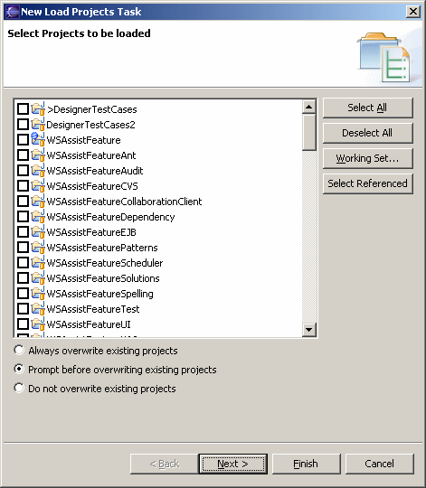

Schedule Load ProjectsAvailable only under CVS To schedule a Load Projects task to be run at a specified time, open the scheduler view, right-click to access the popup menu, select the "New" submenu, and then select "Load Projects". This opens the scheduler wizard so that load projects operation may be configured. Any shared projects may be selected to be loaded into the workspace. Options are provided to control the behavior when the projects are already loaded in the workspace. You can choose to always overwrite the existing projects, prompt before overwriting, or not overwrite any existing projects. Note that when this task is used as a globally shared task, it provides a way to remotely control the project configuration of one or more workspaces. This can only be done for users and groups led by the user, unless the user is the administrator, in which case it can be done for any user or group. Click the "Next >" button to schedule when the message is to be displayed. |